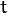
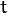

Nowadays, augmented reality is one of the top research topic in computer vision and robotics fields. The most elemental problem in augmented reality is the estimation of the camera pose respect of an object in the case of computer vision area to do later some 3D rendering or in the case of robotics obtain an object pose in order to grasp it and do some manipulation. However, this is not a trivial problem to solve due to the fact that the most common issue in image processing is the computational cost of applying a lot of algorithms or mathematical operations for solving a problem which is basic and immediateley for humans.
In this tutorial is explained how to build a real time application to estimate the camera pose in order to track a textured object with six degrees of freedom given a 2D image and its 3D textured model.
The application will have the followings parts:
In computer vision estimate the camera pose from n 3D-to-2D point correspondences is a fundamental and well understood problem. The most general version of the problem requires estimating the six degrees of freedom of the pose and five calibration parameters: focal length, principal point, aspect ratio and skew. It could be established with a minimum of 6 correspondences, using the well known Direct Linear Transform (DLT) algorithm. There are, though, several simplifications to the problem which turn into an extensive list of different algorithms that improve the accuracy of the DLT.
The most common simplification is to assume known calibration parameters which is the so-called Perspective-n-Point problem:

Problem Formulation: Given a set of correspondences between 3D points expressed in a world reference frame, and their 2D projections onto the image, we seek to retrieve the pose ( and ) of the camera w.r.t. the world and the focal length .
and ) of the camera w.r.t. the world and the focal length .
OpenCV provides four different approaches to solve the Perspective-n-Point problem which return and . Then, using the following formula it’s possible to project 3D points into the image plane:
The complete documentation of how to manage with this equations is in Camera Calibration and 3D Reconstruction.
You can find the source code of this tutorial in the samples/cpp/tutorial_code/calib3d/real_time_pose_estimation/ folder of the OpenCV source library.
The tutorial consists of two main programs:
This applicaton is exclusive to whom don’t have a 3D textured model of the object to be detected. You can use this program to create your own textured 3D model. This program only works for planar objects, then if you want to model an object with complex shape you should use a sophisticated software to create it.
The application needs an input image of the object to be registered and its 3D mesh. We have also to provide the intrinsic parameters of the camera with which the input image was taken. All the files need to be specified using the absolute path or the relative one from your application’s working directory. If none files are specified the program will try to open the provided default parameters.
The application starts up extracting the ORB features and descriptors from the input image and then uses the mesh along with the Möller–Trumbore intersection algorithm to compute the 3D coordinates of the found features. Finally, the 3D points and the descriptors are stored in different lists in a file with YAML format which each row is a different point. The technical background on how to store the files can be found in the File Input and Output using XML and YAML files tutorial.
The aim of this application is estimate in real time the object pose given its 3D textured model.
The application starts up loading the 3D textured model in YAML file format with the same structure explained in the model registration program. From the scene, the ORB features and descriptors are detected and extracted. Then, is used FlannBasedMatcher with LshIndexParams to do the matching between the scene descriptors and the model descriptors. Using the found matches along with solvePnPRansac function the
In the case that you compiled OpenCV with the samples, you can find it in opencv/build/bin/cpp-tutorial-pnp_detection. Then you can run the application and change some parameters:
This program shows how to detect an object given its 3D textured model. You can choose to use a recorded video or the webcam. Usage: ./cpp-tutorial-pnp_detection -help Keys: 'esc' - to quit. -------------------------------------------------------------------------- Usage: cpp-tutorial-pnp_detection [params] -c, --confidence (value:0.95) RANSAC confidence -e, --error (value:2.0) RANSAC reprojection errror -f, --fast (value:true) use of robust fast match -h, --help (value:true) print this message --in, --inliers (value:30) minimum inliers for Kalman update --it, --iterations (value:500) RANSAC maximum iterations count -k, --keypoints (value:2000) number of keypoints to detect --mesh path to ply mesh --method, --pnp (value:0) PnP method: (0) ITERATIVE - (1) EPNP - (2) P3P - (3) DLS --model path to yml model -r, --ratio (value:0.7) threshold for ratio test -v, --video path to recorded videoFor example, you can run the application changing the pnp method:
./cpp-tutorial-pnp_detection --method=2
Here is explained in detail the code for the real time application:
In order to load the textured model I implemented the class Model which has the function load() that opens a YAML file and take the stored 3D points with its corresponding descriptors. You can find an example of a 3D textured model in samples/cpp/tutorial_code/calib3d/real_time_pose_estimation/Data/cookies_ORB.yml.
/* Load a YAML file using OpenCV */ void Model::load(const std::string path) { cv::Mat points3d_mat; cv::FileStorage storage(path, cv::FileStorage::READ); storage["points_3d"] >> points3d_mat; storage["descriptors"] >> descriptors_; points3d_mat.copyTo(list_points3d_in_); storage.release(); }In the main program the model is loaded as follows:
Model model; // instantiate Model object model.load(yml_read_path); // load a 3D textured object modelIn order to read the model mesh I implemented a class Mesh which has a function load() that opens a .ply file and store the 3D points of the object and also the composed triangles. You can find an example of a model mesh in samples/cpp/tutorial_code/calib3d/real_time_pose_estimation/Data/box.ply.
/* Load a CSV with *.ply format */ void Mesh::load(const std::string path) { // Create the reader CsvReader csvReader(path); // Clear previous data list_vertex_.clear(); list_triangles_.clear(); // Read from .ply file csvReader.readPLY(list_vertex_, list_triangles_); // Update mesh attributes num_vertexs_ = list_vertex_.size(); num_triangles_ = list_triangles_.size(); }In the main program the mesh is loaded as follows:
Mesh mesh; // instantiate Mesh object mesh.load(ply_read_path); // load an object meshYou can also load different model and mesh:
./cpp-tutorial-pnp_detection --mesh=/absolute_path_to_your_mesh.ply --model=/absolute_path_to_your_model.yml
To detect is necessary capture video. It’s done loading a recorded video by passing the absolute path where it is located in your machine. In order to test the application you can find a recorded video in samples/cpp/tutorial_code/calib3d/real_time_pose_estimation/Data/box.mp4.
cv::VideoCapture cap; // instantiate VideoCapture cap.open(video_read_path); // open a recorded video if(!cap.isOpened()) // check if we succeeded { std::cout << "Could not open the camera device" << std::endl; return -1; }Then the algorithm is computed frame per frame:
cv::Mat frame, frame_vis; while(cap.read(frame) && cv::waitKey(30) != 27) // capture frame until ESC is pressed { frame_vis = frame.clone(); // refresh visualisation frame // MAIN ALGORITHM }You can also load different recorded video:
./cpp-tutorial-pnp_detection --video=/absolute_path_to_your_video.mp4
The next step is to detect the scene features and extract it descriptors. For this task I implemented a class RobustMatcher which has a function for keypoints detection and features extraction. You can find it in samples/cpp/tutorial_code/calib3d/real_time_pose_estimation/src/RobusMatcher.cpp. In your RobusMatch object you can use any of the 2D features detectors of OpenCV. In this case I used ORB features because is based on FAST to detect the keypoints and BRIEF to extract the descriptors which means that is fast and robust to rotations. You can find more detailed information about ORB in the documentation.
The following code is how to instantiate and set the features detector and the descriptors extractor:
RobustMatcher rmatcher; // instantiate RobustMatcher cv::FeatureDetector * detector = new cv::OrbFeatureDetector(numKeyPoints); // instatiate ORB feature detector cv::DescriptorExtractor * extractor = new cv::OrbDescriptorExtractor(); // instatiate ORB descriptor extractor rmatcher.setFeatureDetector(detector); // set feature detector rmatcher.setDescriptorExtractor(extractor); // set descriptor extractorThe features and descriptors will be computed by the RobustMatcher inside the matching function.
It is the first step in our detection algorithm. The main idea is to match the scene descriptors with our model descriptors in order to know the 3D coordinates of the found features into the current scene.
Firstly, we have to set which matcher we want to use. In this case is used FlannBasedMatcher matcher which in terms of computational cost is faster than the BruteForceMatcher matcher as we increase the trained collectction of features. Then, for FlannBased matcher the index created is Multi-Probe LSH: Efficient Indexing for High-Dimensional Similarity Search due to ORB descriptors are binary.
You can tune the LSH and search parameters to improve the matching efficiency:
cv::Ptr<cv::flann::IndexParams> indexParams = cv::makePtr<cv::flann::LshIndexParams>(6, 12, 1); // instantiate LSH index parameters cv::Ptr<cv::flann::SearchParams> searchParams = cv::makePtr<cv::flann::SearchParams>(50); // instantiate flann search parameters cv::DescriptorMatcher * matcher = new cv::FlannBasedMatcher(indexParams, searchParams); // instantiate FlannBased matcher rmatcher.setDescriptorMatcher(matcher); // set matcherSecondly, we have to call the matcher by using robustMatch() or fastRobustMatch() function. The difference of using this two functions is its computational cost. The first method is slower but more robust at filtering good matches because uses two ratio test and a symmetry test. In contrast, the second method is faster but less robust because only applies a single ratio test to the matches.
The following code is to get the model 3D points and its descriptors and then call the matcher in the main program:
// Get the MODEL INFO std::vector<cv::Point3f> list_points3d_model = model.get_points3d(); // list with model 3D coordinates cv::Mat descriptors_model = model.get_descriptors(); // list with descriptors of each 3D coordinate// -- Step 1: Robust matching between model descriptors and scene descriptors std::vector<cv::DMatch> good_matches; // to obtain the model 3D points in the scene std::vector<cv::KeyPoint> keypoints_scene; // to obtain the 2D points of the scene if(fast_match) { rmatcher.fastRobustMatch(frame, good_matches, keypoints_scene, descriptors_model); } else { rmatcher.robustMatch(frame, good_matches, keypoints_scene, descriptors_model); }The following code corresponds to the robustMatch() function which belongs to the RobustMatcher class. This function uses the given image to detect the keypoints and extract the descriptors, match using two Nearest Neighbour the extracted descriptors with the given model descriptors and vice versa. Then, a ratio test is applied to the two direction matches in order to remove these matches which its distance ratio between the first and second best match is larger than a given threshold. Finally, a symmetry test is applied in order the remove non symmetrical matches.
void RobustMatcher::robustMatch( const cv::Mat& frame, std::vector<cv::DMatch>& good_matches, std::vector<cv::KeyPoint>& keypoints_frame, const std::vector<cv::KeyPoint>& keypoints_model, const cv::Mat& descriptors_model ) { // 1a. Detection of the ORB features this->computeKeyPoints(frame, keypoints_frame); // 1b. Extraction of the ORB descriptors cv::Mat descriptors_frame; this->computeDescriptors(frame, keypoints_frame, descriptors_frame); // 2. Match the two image descriptors std::vector<std::vector<cv::DMatch> > matches12, matches21; // 2a. From image 1 to image 2 matcher_->knnMatch(descriptors_frame, descriptors_model, matches12, 2); // return 2 nearest neighbours // 2b. From image 2 to image 1 matcher_->knnMatch(descriptors_model, descriptors_frame, matches21, 2); // return 2 nearest neighbours // 3. Remove matches for which NN ratio is > than threshold // clean image 1 -> image 2 matches int removed1 = ratioTest(matches12); // clean image 2 -> image 1 matches int removed2 = ratioTest(matches21); // 4. Remove non-symmetrical matches symmetryTest(matches12, matches21, good_matches); }After the matches filtering we have to subtract the 2D and 3D correspondences from the found scene keypoints and our 3D model using the obtained DMatches vector. For more information about DMatch check the documentation.
// -- Step 2: Find out the 2D/3D correspondences std::vector<cv::Point3f> list_points3d_model_match; // container for the model 3D coordinates found in the scene std::vector<cv::Point2f> list_points2d_scene_match; // container for the model 2D coordinates found in the scene for(unsigned int match_index = 0; match_index < good_matches.size(); ++match_index) { cv::Point3f point3d_model = list_points3d_model[ good_matches[match_index].trainIdx ]; // 3D point from model cv::Point2f point2d_scene = keypoints_scene[ good_matches[match_index].queryIdx ].pt; // 2D point from the scene list_points3d_model_match.push_back(point3d_model); // add 3D point list_points2d_scene_match.push_back(point2d_scene); // add 2D point }You can also change the ratio test threshold, the number of keypoints to detect as well as use or not the robust matcher:
./cpp-tutorial-pnp_detection --ratio=0.8 --keypoints=1000 --fast=false
Once with the 2D and 3D correspondences we have to apply a PnP algorithm in order to estimate the camera pose. The reason why we have to use solvePnPRansac instead of solvePnP is due to the fact that after the matching not all the found correspondences are correct and, as like as not, there are false correspondences or also called outliers. The Random Sample Consensus or Ransac is a non-deterministic iterative method which estimate parameters of a mathematical model from observed data producing an aproximate result as the number of iterations increase. After appyling Ransac all the outliers will be eliminated to then estimate the camera pose with a certain probability to obtain a good solution.
For the camera pose estimation I have implemented a class PnPProblem. This class has 4 atributes: a given calibration matrix, the rotation matrix, the translation matrix and the rotation-translation matrix. The intrinsic calibration parameters of the camera which you are using to estimate the pose are necessary. In order to obtain the parameters you can check Camera calibration with square chessboard and Camera calibration With OpenCV tutorials.
The following code is how to declare the PnPProblem class in the main program:
// Intrinsic camera parameters: UVC WEBCAM double f = 55; // focal length in mm double sx = 22.3, sy = 14.9; // sensor size double width = 640, height = 480; // image size double params_WEBCAM[] = { width*f/sx, // fx height*f/sy, // fy width/2, // cx height/2}; // cy PnPProblem pnp_detection(params_WEBCAM); // instantiate PnPProblem classThe following code is how the PnPProblem class initialises its atributes:
// Custom constructor given the intrinsic camera parameters PnPProblem::PnPProblem(const double params[]) { _A_matrix = cv::Mat::zeros(3, 3, CV_64FC1); // intrinsic camera parameters _A_matrix.at<double>(0, 0) = params[0]; // [ fx 0 cx ] _A_matrix.at<double>(1, 1) = params[1]; // [ 0 fy cy ] _A_matrix.at<double>(0, 2) = params[2]; // [ 0 0 1 ] _A_matrix.at<double>(1, 2) = params[3]; _A_matrix.at<double>(2, 2) = 1; _R_matrix = cv::Mat::zeros(3, 3, CV_64FC1); // rotation matrix _t_matrix = cv::Mat::zeros(3, 1, CV_64FC1); // translation matrix _P_matrix = cv::Mat::zeros(3, 4, CV_64FC1); // rotation-translation matrix }OpenCV provides four PnP methods: ITERATIVE, EPNP, P3P and DLS. Depending on the application type, the estimation method will be different. In the case that we want to make a real time application, the more suitable methods are EPNP and P3P due to that are faster than ITERATIVE and DLS at finding an optimal solution. However, EPNP and P3P are not especially robust in front of planar surfaces and sometimes the pose estimation seems to have a mirror effect. Therefore, in this this tutorial is used ITERATIVE method due to the object to be detected has planar surfaces.
The OpenCV Ransac implementation wants you to provide three parameters: the maximum number of iterations until stop the algorithm, the maximum allowed distance between the observed and computed point projections to consider it an inlier and the confidence to obtain a good result. You can tune these paramaters in order to improve your algorithm performance. Increasing the number of iterations you will have a more accurate solution, but will take more time to find a solution. Increasing the reprojection error will reduce the computation time, but your solution will be unaccurate. Decreasing the confidence your arlgorithm will be faster, but the obtained solution will be unaccurate.
The following parameters work for this application:
// RANSAC parameters int iterationsCount = 500; // number of Ransac iterations. float reprojectionError = 2.0; // maximum allowed distance to consider it an inlier. float confidence = 0.95; // ransac successful confidence.The following code corresponds to the estimatePoseRANSAC() function which belongs to the PnPProblem class. This function estimates the rotation and translation matrix given a set of 2D/3D correspondences, the desired PnP method to use, the output inliers container and the Ransac parameters:
// Estimate the pose given a list of 2D/3D correspondences with RANSAC and the method to use void PnPProblem::estimatePoseRANSAC( const std::vector<cv::Point3f> &list_points3d, // list with model 3D coordinates const std::vector<cv::Point2f> &list_points2d, // list with scene 2D coordinates int flags, cv::Mat &inliers, int iterationsCount, // PnP method; inliers container float reprojectionError, float confidence ) // Ransac parameters { cv::Mat distCoeffs = cv::Mat::zeros(4, 1, CV_64FC1); // vector of distortion coefficients cv::Mat rvec = cv::Mat::zeros(3, 1, CV_64FC1); // output rotation vector cv::Mat tvec = cv::Mat::zeros(3, 1, CV_64FC1); // output translation vector bool useExtrinsicGuess = false; // if true the function uses the provided rvec and tvec values as // initial approximations of the rotation and translation vectors cv::solvePnPRansac( list_points3d, list_points2d, _A_matrix, distCoeffs, rvec, tvec, useExtrinsicGuess, iterationsCount, reprojectionError, confidence, inliers, flags ); Rodrigues(rvec,_R_matrix); // converts Rotation Vector to Matrix _t_matrix = tvec; // set translation matrix this->set_P_matrix(_R_matrix, _t_matrix); // set rotation-translation matrix }In the following code are the 3th and 4th steps of the main algorithm. The first, calling the above function and the second taking the output inliers vector from Ransac to get the 2D scene points for drawing purpose. As seen in the code we must be sure to apply Ransac if we have matches, in the other case, the function solvePnPRansac crashes due to any OpenCV bug.
if(good_matches.size() > 0) // None matches, then RANSAC crashes { // -- Step 3: Estimate the pose using RANSAC approach pnp_detection.estimatePoseRANSAC( list_points3d_model_match, list_points2d_scene_match, pnpMethod, inliers_idx, iterationsCount, reprojectionError, confidence ); // -- Step 4: Catch the inliers keypoints to draw for(int inliers_index = 0; inliers_index < inliers_idx.rows; ++inliers_index) { int n = inliers_idx.at<int>(inliers_index); // i-inlier cv::Point2f point2d = list_points2d_scene_match[n]; // i-inlier point 2D list_points2d_inliers.push_back(point2d); // add i-inlier to list }Finally, once the camera pose has been estimated we can use the
The following code corresponds to the backproject3DPoint() function which belongs to the PnPProblem class. The function backproject a given 3D point expressed in a world reference frame onto a 2D image:
// Backproject a 3D point to 2D using the estimated pose parameters cv::Point2f PnPProblem::backproject3DPoint(const cv::Point3f &point3d) { // 3D point vector [x y z 1]' cv::Mat point3d_vec = cv::Mat(4, 1, CV_64FC1); point3d_vec.at<double>(0) = point3d.x; point3d_vec.at<double>(1) = point3d.y; point3d_vec.at<double>(2) = point3d.z; point3d_vec.at<double>(3) = 1; // 2D point vector [u v 1]' cv::Mat point2d_vec = cv::Mat(4, 1, CV_64FC1); point2d_vec = _A_matrix * _P_matrix * point3d_vec; // Normalization of [u v]' cv::Point2f point2d; point2d.x = point2d_vec.at<double>(0) / point2d_vec.at<double>(2); point2d.y = point2d_vec.at<double>(1) / point2d_vec.at<double>(2); return point2d; }The above function is used to compute all the 3D points of the object Mesh to show the pose of the object.
You can also change RANSAC parameters and PnP method:
./cpp-tutorial-pnp_detection --error=0.25 --confidence=0.90 --iterations=250 --method=3
Is it common in computer vision or robotics fields that after applying detection or tracking techniques, bad results are obtained due to some sensor errors. In order to avoid these bad detections in this tutorial is explained how to implement a Linear Kalman Filter. The Kalman Filter will be applied after detected a given number of inliers.
You can find more information about what Kalman Filter is. In this tutorial it’s used the OpenCV implementation of the Kalman Filter based on Linear Kalman Filter for position and orientation tracking to set the dynamics and measurement models.
Firstly, we have to define our state vector which will have 18 states: the positional data (x,y,z) with its first and second derivatives (velocity and acceleration), then rotation is added in form of three euler angles (roll, pitch, jaw) together with their first and second derivatives (angular velocity and acceleration)
Secondly, we have to define the number of measuremnts which will be 6: from
cv::KalmanFilter KF; // instantiate Kalman Filter int nStates = 18; // the number of states int nMeasurements = 6; // the number of measured states int nInputs = 0; // the number of action control double dt = 0.125; // time between measurements (1/FPS) initKalmanFilter(KF, nStates, nMeasurements, nInputs, dt); // init functionThe following code corresponds to the Kalman Filter initialisation. Firstly, is set the process noise, the measurement noise and the error covariance matrix. Secondly, are set the transition matrix which is the dynamic model and finally the measurement matrix, which is the measurement model.
You can tune the process and measurement noise to improve the Kalman Filter performance. As the measurement noise is reduced the faster will converge doing the algorithm sensitive in front of bad measurements.
void initKalmanFilter(cv::KalmanFilter &KF, int nStates, int nMeasurements, int nInputs, double dt) { KF.init(nStates, nMeasurements, nInputs, CV_64F); // init Kalman Filter cv::setIdentity(KF.processNoiseCov, cv::Scalar::all(1e-5)); // set process noise cv::setIdentity(KF.measurementNoiseCov, cv::Scalar::all(1e-4)); // set measurement noise cv::setIdentity(KF.errorCovPost, cv::Scalar::all(1)); // error covariance /* DYNAMIC MODEL */ // [1 0 0 dt 0 0 dt2 0 0 0 0 0 0 0 0 0 0 0] // [0 1 0 0 dt 0 0 dt2 0 0 0 0 0 0 0 0 0 0] // [0 0 1 0 0 dt 0 0 dt2 0 0 0 0 0 0 0 0 0] // [0 0 0 1 0 0 dt 0 0 0 0 0 0 0 0 0 0 0] // [0 0 0 0 1 0 0 dt 0 0 0 0 0 0 0 0 0 0] // [0 0 0 0 0 1 0 0 dt 0 0 0 0 0 0 0 0 0] // [0 0 0 0 0 0 1 0 0 0 0 0 0 0 0 0 0 0] // [0 0 0 0 0 0 0 1 0 0 0 0 0 0 0 0 0 0] // [0 0 0 0 0 0 0 0 1 0 0 0 0 0 0 0 0 0] // [0 0 0 0 0 0 0 0 0 1 0 0 dt 0 0 dt2 0 0] // [0 0 0 0 0 0 0 0 0 0 1 0 0 dt 0 0 dt2 0] // [0 0 0 0 0 0 0 0 0 0 0 1 0 0 dt 0 0 dt2] // [0 0 0 0 0 0 0 0 0 0 0 0 1 0 0 dt 0 0] // [0 0 0 0 0 0 0 0 0 0 0 0 0 1 0 0 dt 0] // [0 0 0 0 0 0 0 0 0 0 0 0 0 0 1 0 0 dt] // [0 0 0 0 0 0 0 0 0 0 0 0 0 0 0 1 0 0] // [0 0 0 0 0 0 0 0 0 0 0 0 0 0 0 0 1 0] // [0 0 0 0 0 0 0 0 0 0 0 0 0 0 0 0 0 1] // position KF.transitionMatrix.at<double>(0,3) = dt; KF.transitionMatrix.at<double>(1,4) = dt; KF.transitionMatrix.at<double>(2,5) = dt; KF.transitionMatrix.at<double>(3,6) = dt; KF.transitionMatrix.at<double>(4,7) = dt; KF.transitionMatrix.at<double>(5,8) = dt; KF.transitionMatrix.at<double>(0,6) = 0.5*pow(dt,2); KF.transitionMatrix.at<double>(1,7) = 0.5*pow(dt,2); KF.transitionMatrix.at<double>(2,8) = 0.5*pow(dt,2); // orientation KF.transitionMatrix.at<double>(9,12) = dt; KF.transitionMatrix.at<double>(10,13) = dt; KF.transitionMatrix.at<double>(11,14) = dt; KF.transitionMatrix.at<double>(12,15) = dt; KF.transitionMatrix.at<double>(13,16) = dt; KF.transitionMatrix.at<double>(14,17) = dt; KF.transitionMatrix.at<double>(9,15) = 0.5*pow(dt,2); KF.transitionMatrix.at<double>(10,16) = 0.5*pow(dt,2); KF.transitionMatrix.at<double>(11,17) = 0.5*pow(dt,2); /* MEASUREMENT MODEL */ // [1 0 0 0 0 0 0 0 0 0 0 0 0 0 0 0 0 0] // [0 1 0 0 0 0 0 0 0 0 0 0 0 0 0 0 0 0] // [0 0 1 0 0 0 0 0 0 0 0 0 0 0 0 0 0 0] // [0 0 0 0 0 0 0 0 0 1 0 0 0 0 0 0 0 0] // [0 0 0 0 0 0 0 0 0 0 1 0 0 0 0 0 0 0] // [0 0 0 0 0 0 0 0 0 0 0 1 0 0 0 0 0 0] KF.measurementMatrix.at<double>(0,0) = 1; // x KF.measurementMatrix.at<double>(1,1) = 1; // y KF.measurementMatrix.at<double>(2,2) = 1; // z KF.measurementMatrix.at<double>(3,9) = 1; // roll KF.measurementMatrix.at<double>(4,10) = 1; // pitch KF.measurementMatrix.at<double>(5,11) = 1; // yaw }In the following code is the 5th step of the main algorithm. When the obtained number of inliers after Ransac is over the threshold, the measurements matrix is filled and then the Kalman Filter is updated:
// -- Step 5: Kalman Filter // GOOD MEASUREMENT if( inliers_idx.rows >= minInliersKalman ) { // Get the measured translation cv::Mat translation_measured(3, 1, CV_64F); translation_measured = pnp_detection.get_t_matrix(); // Get the measured rotation cv::Mat rotation_measured(3, 3, CV_64F); rotation_measured = pnp_detection.get_R_matrix(); // fill the measurements vector fillMeasurements(measurements, translation_measured, rotation_measured); } // Instantiate estimated translation and rotation cv::Mat translation_estimated(3, 1, CV_64F); cv::Mat rotation_estimated(3, 3, CV_64F); // update the Kalman filter with good measurements updateKalmanFilter( KF, measurements, translation_estimated, rotation_estimated);The following code corresponds to the fillMeasurements() function which converts the measured Rotation Matrix to Eulers angles and fill the measurements matrix along with the measured translation vector:
void fillMeasurements( cv::Mat &measurements, const cv::Mat &translation_measured, const cv::Mat &rotation_measured) { // Convert rotation matrix to euler angles cv::Mat measured_eulers(3, 1, CV_64F); measured_eulers = rot2euler(rotation_measured); // Set measurement to predict measurements.at<double>(0) = translation_measured.at<double>(0); // x measurements.at<double>(1) = translation_measured.at<double>(1); // y measurements.at<double>(2) = translation_measured.at<double>(2); // z measurements.at<double>(3) = measured_eulers.at<double>(0); // roll measurements.at<double>(4) = measured_eulers.at<double>(1); // pitch measurements.at<double>(5) = measured_eulers.at<double>(2); // yaw }The following code corresponds to the updateKalmanFilter() function which update the Kalman Filter and set the estimated Rotation Matrix and translation vector. The estimated Rotation Matrix comes from the estimated Euler angles to Rotation Matrix.
void updateKalmanFilter( cv::KalmanFilter &KF, cv::Mat &measurement, cv::Mat &translation_estimated, cv::Mat &rotation_estimated ) { // First predict, to update the internal statePre variable cv::Mat prediction = KF.predict(); // The "correct" phase that is going to use the predicted value and our measurement cv::Mat estimated = KF.correct(measurement); // Estimated translation translation_estimated.at<double>(0) = estimated.at<double>(0); translation_estimated.at<double>(1) = estimated.at<double>(1); translation_estimated.at<double>(2) = estimated.at<double>(2); // Estimated euler angles cv::Mat eulers_estimated(3, 1, CV_64F); eulers_estimated.at<double>(0) = estimated.at<double>(9); eulers_estimated.at<double>(1) = estimated.at<double>(10); eulers_estimated.at<double>(2) = estimated.at<double>(11); // Convert estimated quaternion to rotation matrix rotation_estimated = euler2rot(eulers_estimated); }The 6th step is set the estimated rotation-translation matrix:
// -- Step 6: Set estimated projection matrix pnp_detection_est.set_P_matrix(rotation_estimated, translation_estimated);The last and optional step is draw the found pose. To do it I implemented a function to draw all the mesh 3D points and an extra reference axis:
// -- Step X: Draw pose drawObjectMesh(frame_vis, &mesh, &pnp_detection, green); // draw current pose drawObjectMesh(frame_vis, &mesh, &pnp_detection_est, yellow); // draw estimated pose double l = 5; std::vector<cv::Point2f> pose_points2d; pose_points2d.push_back(pnp_detection_est.backproject3DPoint(cv::Point3f(0,0,0))); // axis center pose_points2d.push_back(pnp_detection_est.backproject3DPoint(cv::Point3f(l,0,0))); // axis x pose_points2d.push_back(pnp_detection_est.backproject3DPoint(cv::Point3f(0,l,0))); // axis y pose_points2d.push_back(pnp_detection_est.backproject3DPoint(cv::Point3f(0,0,l))); // axis z draw3DCoordinateAxes(frame_vis, pose_points2d); // draw axesYou can also modify the minimum inliers to update Kalman Filter:
./cpp-tutorial-pnp_detection --inliers=20
The following videos are the results of pose estimation in real time using the explained detection algorithm using the following parameters:
// Robust Matcher parameters int numKeyPoints = 2000; // number of detected keypoints float ratio = 0.70f; // ratio test bool fast_match = true; // fastRobustMatch() or robustMatch() // RANSAC parameters int iterationsCount = 500; // number of Ransac iterations. int reprojectionError = 2.0; // maximum allowed distance to consider it an inlier. float confidence = 0.95; // ransac successful confidence. // Kalman Filter parameters int minInliersKalman = 30; // Kalman threshold updating
You can watch the real time pose estimation on the YouTube here.